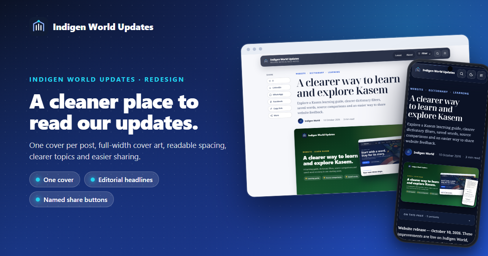
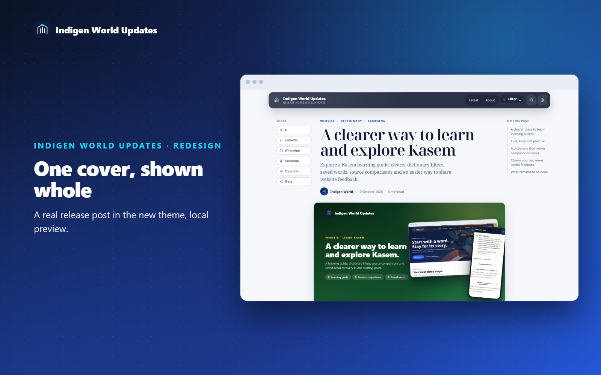
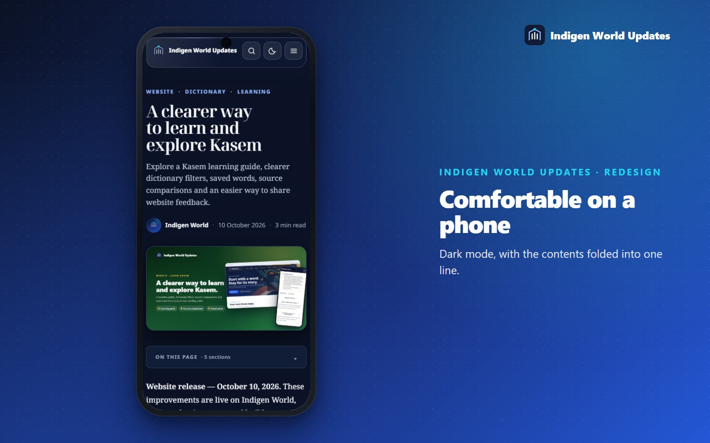
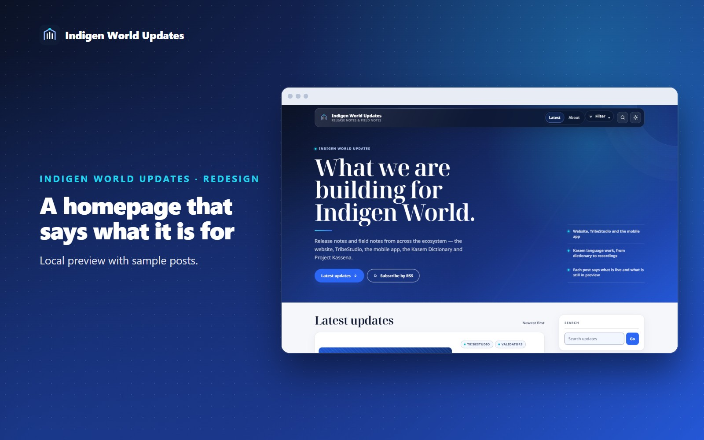

Update — October 11, 2026. A redesigned theme for Indigen World Updates is ready. It changes how this blog looks and reads; it does not change any Indigen World app or website. Until the new theme is installed on Blogger, you will still see the current design. The screenshots show the new theme in a local preview, displaying a real release post.
Reading an update here should be easy: one cover at the top, text with room to breathe, clear topics and a simple way to share. The new design focuses on those things.
Each release post begins with a designed cover. That cover was appearing twice on every post: once as the header image and again at the top of the article. On the homepage, an old Featured Post panel could show the newest cover a third time. Covers were also cropped to a different shape, which cut off the words designed into them.
Now each post shows its cover once, at its full designed shape. Homepage cards use the same shape, so headlines inside the artwork are no longer cut off.

Posts can have many labels. A post now shows up to three topics above its title, with product areas such as Website, TribeStudio and the mobile app listed first. Homepage cards show the two most useful topics instead of the first two in alphabetical order. The sidebar shows the twelve busiest topics, with every topic one click away. Archive months now include the year and their post count.

Share buttons now say where they share: X, LinkedIn, WhatsApp, Facebook and Copy link. After you copy a link, the button changes to “Copied”. This also works in browsers that do not support the newer copy function, including some in-app browsers. A “Follow what we ship next” card at the end of each post links to the RSS feed and to indigenworld.com. Related updates now appear as small cards with their covers.
On a computer, press Ctrl + K (or /) to search.
Comments still use Blogger’s comment system. They now load only when you choose Read or leave a comment, so the rest of the page loads faster. Opening a link to a particular comment opens the comments automatically.

Availability The theme is finished and has passed its local checks. It is not live yet: it goes live when the Blogger theme is updated. Older posts do not need any changes. Search engines and social apps keep using the same cover image for each post.